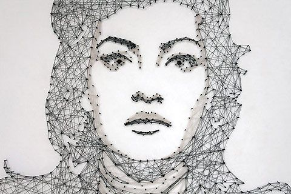
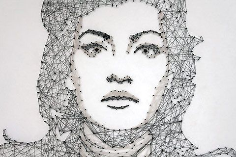

At the beginning of the first sprint, Team Adryft crafted this project proposal:
Our team jumped into the project bright-eyed and excited. We welcomed the engineering constraints and challenges we would encounter while fabricating a "lighter-than-air" robot.
Our MVP would have moving tentacles made with light and efficient shape-memory-alloys! It would have a camera and react to human faces with computer vision!

However, as we researched materials and simulated relevant mechanics in Matlab, we realized that
our project was way too overscoped and
Here's a quick breakdown of why we decided to move away from the jellyfish idea:
- shape-memory alloys require too much voltage to be effective
- SMAs don't contract enough
- we would need a meter-wide balloon and $113 of helium to lift 1 pound of electonics
We decided to use nitinol wires due to its reasonable cost and availability. We tested two shape memory alloy configurations: straight wire and spring. We found that the 3% contraction in length for the straight wire was barely noticeable. The nitinol springs displayed much more contraction, but they required a biased spring to return to their original positions. More importantly, the nitinol wire had large power requirements. A better alternative was to use servo motors. However, experimenting with shape memory alloy was one of our primary learning objectives, so we decided to reevaluate our project goals, which ultimately resulted in our pivot to the Stringomatic.
Pivot! The Stringomatic is Born!
Our team returned to the planning board and revisited another idea we were all excited about. We rewrote our project proposal:
Our project was inspired by hand-made, string paintings made by artists like Petros Vrellis.
 

Since we were already 2-weeks into the POE project, we knew we were more constrained on time than before. We agreed upon an achievable minimal viable product: CNC machine that can simply wrap string around posts with known locations.
Jumping right into the project, we discussed, debated then decided on a rotating mechanism for the CNC. The CNC would operate in polar units rather than cartesian coordinates. Making a CNC machine that uses polar coordinates offers a number of distinct advantages. Firstly, purchasing hardware for a robust rotation motion is much simpler and cheaper than the hardware needed to power a linear system. Secondly, given the shape and kind of art pieces that we wished to develop, having a polar gantry just lends itself better to creating images. Right before the day of the first sprint review, we created a CAD model that contianed the major subsystem boundaries and the largest physical componets. We were able to develop a comprehensive and relatively clean CAD model in just a single night. This is due to the way in which we decided to model and design components of the assembly.
We used a what we coined as "Master Sketches" in order to simultaneously develop both the larger design of the system, as well as how subsequent compoennets interface with each other. In order to minimize repeated work, we developed a series of sketches in part file that defined the locations of some of the most integral parts of the entire assembly. When making actual parts, we would import this "Master Sketch" file first, and make any part relative to the locaitons and sizes defined by the Master Sketch. Any size, dimension, and component that could possibly be referenced by more than just one part would have some kind of representation in the Master Sketch. When defined this way, the CAD is really flexible, as changes that are made to the master sketch propogate down to every derived part. In addition, when parts are made, they are made in such a way that they will always interface well with neighboring parts. The Master Sketch allowed us to design everything at once from a top-down direction.
Below is an image that shows the "Master Sketch". Notice how the major components of the system can be seen by at least with rudimentary lines.


So, we've got a month left to bring this string art machine to life. Wish us luck!